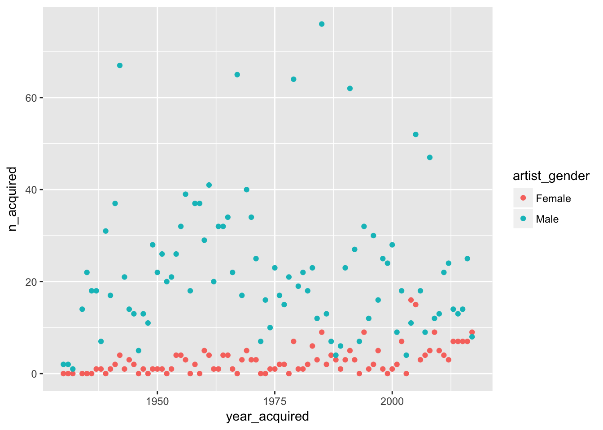
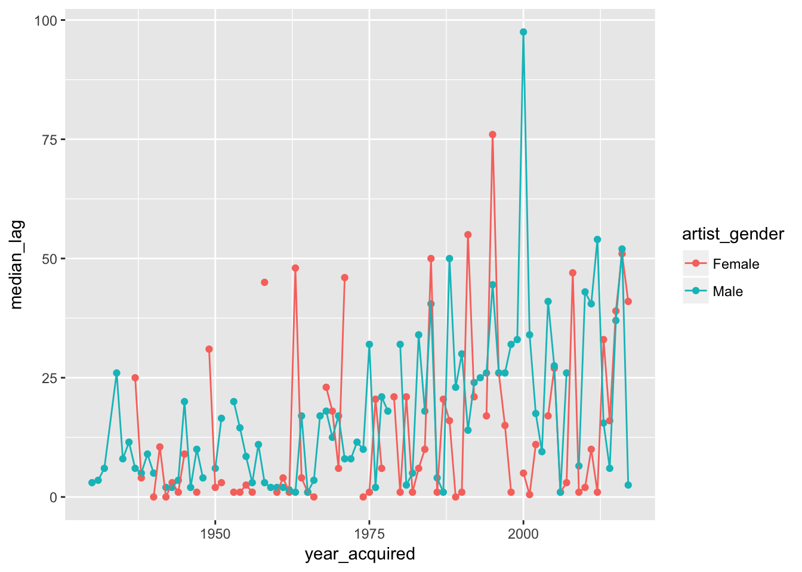
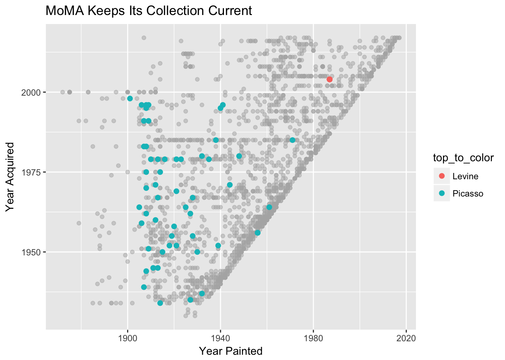

Lab 02: Addendum
CS631
Alison Hill
library(tidyverse)
moma <- read_csv("http://bit.ly/cs631-moma")
moma_singles_summary <- moma %>%
filter(num_artists == 1) %>%
mutate(lag_acquired = year_acquired - year_created,
artist_gender = as.factor(artist_gender)) %>%
group_by(year_acquired, artist_gender) %>%
summarize(n_acquired = n(),
median_lag = median(lag_acquired)) %>%
complete(year_acquired, artist_gender,
fill = list(n_acquired = 0))
ggplot(moma_singles_summary, aes(x = year_acquired,
y = n_acquired,
color = artist_gender)) +
geom_point()
ggplot(moma_singles_summary, aes(x = year_acquired,
y = median_lag,
color = artist_gender,
group = artist_gender)) +
geom_point() +
geom_line()
Tag top artists
top_artists <- moma %>%
count(artist_gender, artist, sort = TRUE) %>%
group_by(artist_gender) %>%
top_n(1) %>%
filter(!is.na(artist_gender)) %>%
pull(artist)
moma <- moma %>%
mutate(top_to_color = case_when(
artist %in% top_artists & artist_gender == "Male" ~ "Picasso",
artist %in% top_artists & artist_gender == "Female" ~ "Levine"
))
moma_top <- moma %>%
filter(!is.na(top_to_color))
moma_else <- moma %>%
filter(is.na(top_to_color))
# need to separate plotting of "NA" points
# plot Levine and Picasso points with separate geom layer
ggplot(data = NULL, aes(year_created, year_acquired)) +
geom_point(data = moma_else, color = "grey70", alpha = .5) +
geom_point(data = moma_top, aes(color = top_to_color), size = 2) +
labs(x = "Year Painted", y = "Year Acquired") +
ggtitle("MoMA Keeps Its Collection Current") 